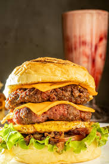

cheeseburger

Description
A cheeseburger is a juicy grilled beef patty served in a toasted bun and topped with melted cheese.
It’s often garnished with lettuce, tomato, onions, and condiments for extra flavor.
Ingredients:
- Ground beef (for patties)
- Salt and pepper
- Cheese slices (e.g., cheddar)
- Burger buns
- Lettuce
- Tomato slices
- Onion slices
- Pickles (optional)
- Ketchup, mustard, or mayonnaise
- Butter or oil (for toasting buns)
Steps to Make a Cheeseburger:
- Form the ground beef into patties and season both sides with salt and pepper.
- Cook the patties on a grill or skillet over medium-high heat for 3–4 minutes per side.
- In the last minute of cooking, place a slice of cheese on each patty to melt.
- Toast the burger buns lightly on the grill or pan.
- Assemble the burger: place the patty on the bun and add lettuce, tomato, onions, and your favorite condiments.
- Top with the other half of the bun and serve warm.
index